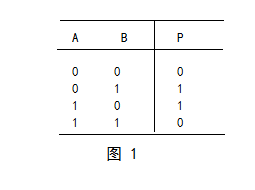

异或，英文为exclusive OR，缩写成xor
异或（xor）是一个数学运算符。它应用于逻辑运算。异或的数学符号为“⊕”，计算机符号为“xor”。其运算法则为：
a⊕b = (¬a ∧ b) ∨ (a ∧¬b)
如果a、b两个值不相同，则异或结果为1。
如果a、b两个值相同，异或结果为0。
异或也叫半加运算，其运算法则相当于不带进位的二进制加法：二进制下用1表示真，0表示假，则异或的运算法则为：0⊕0=0，1⊕0=1，0⊕1=1，1⊕1=0（同为0，异为1），这些法则与加法是相同的，只是不带进位，所以异或常被认作不进位加法。

void swap(int* a,int* b)
{
a=a^b;
b=b^a;
a=a^b;
}